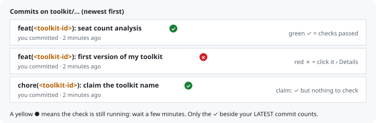

Page 10 of 12 · B. Make your toolkit
Hand in your toolkit
Your toolkit folder is your hand-in: push your branch to GitHub, or hand in a zip of the folder. Either way, run the checks first.
Your toolkit id: <toolkit-id> · changeYour toolkit id is not set on this page yet: or make it on page 6. Orange <toolkit-id> = replace with yours.
Your tutor will tell you:
- where to hand in: to be announced
- the deadline: to be announced
- whether the branch or the zip counts: to be announced
Public. The course repository is public: your branch, your README and your commit name can be read by anyone. Put no student number, passwords or keys in them.
01Two ways to hand in
The same folder, toolkits/<toolkit-id>/.
Two ways to hand in
The same folder, toolkits/<toolkit-id>/.
- Your pushed branch on GitHub (steps 02–05): your tutor sees it, and GitHub checks it for you.
- A zip of your folder (step 06), if your tutor asks for one or pushing does not work for you.
02Push your branch
Your work, committed and on GitHub.
Push your branch
Your work, committed and on GitHub.
npm run check:toolkit -- -t <toolkit-id>
PASSED: toolkit "…" is ready. as the last line.
git status
On branch toolkit/<toolkit-id> and nothing to commit, working tree clean. Files listed? Commit them first (how).
git push
… -> toolkit/<toolkit-id>, or “Everything up-to-date” if it was pushed already.
Never pushed this branch? Something went wrong?
- Never claimed your branch: page 6 › Claim it on GitHub.
- “Permission denied” / 403 · “GH013 … rule violations” · “GH007 … email privacy” · “src refspec … does not match any”
03Check it on GitHub
Your folder is there, and a green ✓ is beside your latest commit.
Check it on GitHub
Your folder is there, and a green ✓ is beside your latest commit.
- Open your branchThe course's branches › type your initials › click
toolkit/<toolkit-id>.your latest commit message at the top, and your folder inside
toolkits/. - Wait for the checkBeside your latest commit a yellow ● turns into a green ✓ or a red ✗ after a few minutes. Click it to see the checks.

The claim commit has a ✓ too. An empty branch has nothing to check, so it is always green. Your hand-in is complete only when your folder is visible on GitHub and the ✓ is beside your latest commit, the one that contains it.
your folder is on GitHub and your latest commit has a green ✓.
04Red ✗? Read it and fix it
Click the ✗ › Details, and read the red lines.
Red ✗? Read it and fix it
Click the ✗ › Details, and read the red lines.
| The red message says | Do this |
|---|---|
| This branch changes files outside toolkits/… | Put those files back (Help), commit, push. |
| No toolkit "…" was found | Your folder is not on the branch or has another name: Help. |
| toolkit.ts is one folder too deep | Move the inner folder's contents up one level (Help), commit, push. |
| a check:toolkit or typecheck error | Run the same check on your laptop, paste the message to your AI, fix it inside your folder, commit, push. |
05Update your README
It is the first thing your tutor reads.
Update your README
It is the first thing your tutor reads.
Ask your agent or chat, for example:
Update toolkits/<toolkit-id>/README.md for my tutor: my GitHub username, what the toolkit is for, its Functions and attributes, its algorithms (what each shows or changes, and how to run it), its example designs, how to try it (npm run dev, then http://localhost:5173/?toolkit=<toolkit-id>), and the design decisions I made. Plain English, short.
Read it, correct it in your own words, then commit and push it like any change.
What a good README contains
- Your GitHub username and your toolkit id.
- The idea, in one or two sentences.
- The Functions (and what each records), the algorithms and the example designs.
- How to try it, and which analysis or transform to run on which design.
- Decisions you made and why. No student number, passwords or keys: it is public.
06Or: hand in a zip of your folder
When your tutor asks for a zip.
Or: hand in a zip of your folder
When your tutor asks for a zip.
- Check firstRun the check (step 02) and make sure it prints
PASSED. - Compress your folderThe folder
toolkits/<toolkit-id>itself, nottoolkitsand not the whole course folder. In VS Code's explorer, right-click your folder › Reveal in File ExplorerReveal in Finder, then:Windows
Windows 11: right-click the folder › Compress to ZIP file. Older Windows: right-click › Send to › Compressed (zipped) folder.
macOS
Right-click the folder › Compress "<toolkit-id>".
- Name it
<toolkit-id>.zipInside it there must be the folder<toolkit-id>/withtoolkit.tsdirectly inside: double-click the zip to check.
07No laptop that can run the app?
Only if your tutor agrees.
No laptop that can run the app?
Only if your tutor agrees.
Tell your tutor early. If your tutor agrees, hand in your browser work instead: in the app, Project › Export project, and send the .project.json file as your tutor asks (Use the app).